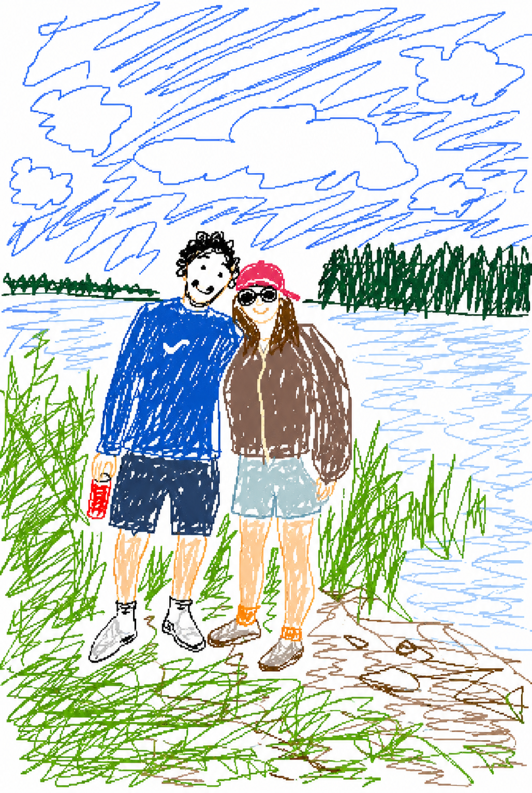

Non-Alcoholic Beer
All of the ceremony, none of the regret. Raise a glass — clear-headed and entirely charming.
Istanbul Saint Petersburg
A small page, made with care, for someone who turns ordinary days into something worth remembering.
Scroll
The house favourites
One more thing
Gluten-Free Pasta
Served with love — and absolutely no gluten.